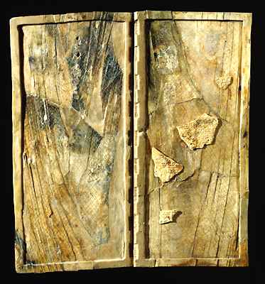

The Challenge -
Ivory writing-board

These two boards were part of a set of 16 hinged together. They were discovered in the palace of the Assyrian king Ashurnasirpal at Nimrud. The scratch marks helped hold a layer of wax which was melted over the surface. When the wax dried it would have been inscribed in cuneiform.
To learn more about this visit Writing Explore.
|
|